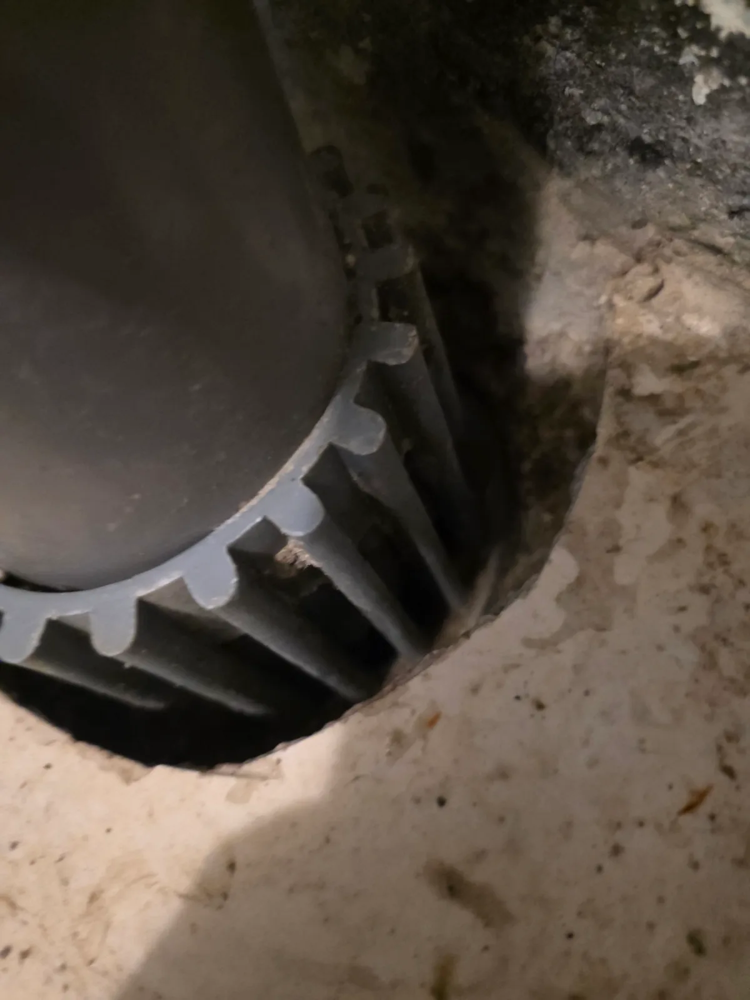

구리시 수택동 하수구막힘, 현장 도착 후 진단
구리시 수택동 세탁실 바닥의 물이 제대로 빠지지 않는다는 요청을 접수한 신라건축설비는 필요한 장비를 준비해 신속하게 현장으로 출동했습니다. 숙련된 하수구막힘 전문 기술자가 배수구 주변의 물고임과 배수 속도를 먼저 확인한 뒤 바닥 배수구 내부를 점검했습니다. 세탁실은 세탁기에서 배출되는 물과 함께 섬유 먼지와 보풀, 머리카락 등의 이물질이 지속적으로 유입되는 공간입니다. 겉에서 보이는 부분만 청소해서는 내부 깊숙이 엉킨 이물질이 남을 수 있어 배수구 부속을 분리하고 막힘 범위를 직접 확인하기로 했습니다.
1단계: 증상 확인과 필요한 장비 작업
먼저 바닥 배수구의 덮개와 내부 부속을 순서대로 분리해 배수 통로를 개방했습니다. 내부를 확인하자 머리카락과 검게 변한 섬유 찌꺼기, 각종 오염물이 서로 단단하게 엉켜 배수구 입구와 안쪽 통로를 막고 있었습니다. 세탁실 하수구막힘의 원인이 단순한 물때가 아니라 오랜 시간 축적된 섬유성 이물질 덩어리라는 점을 확인하고, 배수구와 배관을 손상시키지 않도록 조금씩 꺼내며 제거했습니다.

2단계: 원인 구간 처리와 정상 작동 확인
배수구 안쪽에 남아 있던 머리카락과 세탁 보풀, 슬러지 형태의 오염물을 추가로 정리했습니다. 특히 섬유성 이물질은 서로 얽히면서 배관 내부의 다른 찌꺼기까지 붙잡기 때문에 일부만 제거하면 배수 불량이 빠르게 재발할 수 있습니다. 눈에 보이는 덩어리만 걷어내지 않고 배수 통로를 따라 남은 잔존 이물질까지 정리한 후 물을 흘려보내 배수 속도와 물고임 여부를 확인했습니다.

작업 결과와 재발 방지 안내
배수구 내부를 막고 있던 머리카락과 다량의 섬유 찌꺼기를 제거한 뒤 세탁실 바닥의 물이 정체되지 않고 원활하게 빠지는 것을 확인했습니다. 세탁실 배수구는 세탁기에서 나오는 보풀과 먼지가 반복적으로 유입되기 때문에 거름망을 사용하고, 배수 속도가 느려지기 시작할 때 내부를 점검하는 것이 좋습니다. 이미 물이 차오르거나 역류하는 상태라면 약품을 반복해서 붓기보다 배수구 내부와 연결 배관의 막힘 범위를 정확히 확인해야 합니다.
신라건축설비는 구리시 수택동을 비롯한 경기 전 지역과 서울 전 지역에 신속하게 출동하여 세탁실 하수구막힘, 욕실 바닥막힘, 싱크대막힘과 변기막힘을 전문적으로 해결합니다. 단순히 입구의 이물질만 제거하지 않고 막힘 위치와 배관 상태에 따라 석션, 관통, 배관 내시경검사, 샤프트와 고압세척 등 적합한 공법을 선택합니다. 배수관이나 공용배관의 구조적인 문제가 확인될 경우 배관 보수와 교체공사까지 자체적으로 대응할 수 있습니다.
최종 조치: 세탁실 바닥 배수구의 내부 부속을 분리한 뒤 배수 통로를 가득 막고 있던 머리카락과 섬유 찌꺼기, 오염물 덩어리를 제거했습니다. 배수구 안쪽에 남은 잔존 이물질까지 정리하고 물을 흘려보내 정상적인 배수 상태를 확인했습니다.
현장 방문 전 확인하는 비용과 작업 범위
신라건축설비는 현장 증상과 배관 구조를 확인한 뒤 필요한 작업과 예상 비용을 안내합니다. 단순 관통으로 해결되는지, 배관내시경·석션·고압세척 또는 추가 장비가 필요한지는 현장 상태에 따라 달라집니다. 출장비와 야간 작업비, 추가 장비 비용이 발생할 수 있는 경우 작업 전에 먼저 설명하고 동의를 받은 범위에서 진행합니다.
업체를 선택할 때 확인할 사항
무조건적인 ‘0원’ 표현보다 실제 작업 범위, 추가 비용 조건, 사용 장비와 사후 대응 기준을 확인하는 것이 중요합니다. 해결되지 않았을 때의 비용 기준과 작업 후 동일 증상 발생 시 점검 범위를 사전에 문의해두면 불필요한 분쟁을 줄일 수 있습니다.
구리시 하수구막힘 자주 묻는 질문
여러 배수구가 동시에 역류하면 공용배관 문제인가요?
세탁실 바닥 배수구로 물이 원활하게 빠지지 않고 배수 속도가 점점 느려지면서, 세탁기 배수 시 바닥으로 물이 차오르거나 역류할 가능성이 있는 상태였습니다.처럼 증상이 나타나더라도 원인은 현장마다 다를 수 있습니다. 장비와 배관 구조를 확인한 뒤 필요한 작업 범위를 안내합니다.
고압세척이 항상 필요한가요?
작업 전 증상과 현장 여건을 확인해 예상 범위와 비용을 먼저 안내합니다. 변기 탈거, 장비 추가 투입 또는 공용배관 작업이 필요한 경우 고객 동의 없이 임의로 진행하지 않습니다.
작업 전 추가 비용을 확인할 수 있나요?
완료 후 정상 작동을 함께 확인하고 작업 범위에 따른 사후 안내를 드립니다. 동일 증상이 반복되면 현장 기록을 기준으로 원인을 다시 점검합니다.
하수구막힘 서울·경기 출동지역
신라건축설비는 구리시 수택동 현장을 포함해 서울 25개 구와 경기도 31개 시·군의 배관 문제를 상담합니다. 현장 거리와 기사 배정 상황에 따라 출동 가능 여부를 먼저 안내드립니다.
서울 전 지역
강남구 · 강동구 · 강북구 · 강서구 · 관악구 · 광진구 · 구로구 · 금천구 · 노원구 · 도봉구 · 동대문구 · 동작구 · 마포구 · 서대문구 · 서초구 · 성동구 · 성북구 · 송파구 · 양천구 · 영등포구 · 용산구 · 은평구 · 종로구 · 중구 · 중랑구
경기도 주요 출동지역
수원시 · 용인시 · 고양시 · 화성시 · 성남시 · 부천시 · 남양주시 · 안산시 · 평택시 · 안양시 · 시흥시 · 파주시 · 김포시 · 의정부시 · 광주시 · 하남시 · 광명시 · 군포시 · 양주시 · 오산시 · 이천시 · 안성시 · 구리시 · 의왕시 · 포천시 · 양평군 · 여주시 · 동두천시 · 과천시 · 가평군 · 연천군